本文是张衔瑜第186篇推文 共计5128个字，20张图
大年三十中午，我去学校食堂。
大概早在上一周的周末，我就和这里边烧腊窗口的人说好了，我要一份烧腊的套餐。套餐有很多选项。我们约莫是在一个多月以前就商量着一起过年的事。因为地方上有八人聚集的限制，所以订的最小份食材：一只烧鸡、一斤烧肉和一斤叉烧。订餐的时候，店里的小哥说着烫嘴的中文，像画画一样把烧腊的中文订单画给了我看。
上次见到有成年人写中文像画画一样是什么时候？
可能是好多年前在高中对门吃原汤盖码，接电话的小哥听到话筒那边说“要煎豆腐和青椒炒肉”，嘟囔着我不会写煎豆腐的煎啊，然后写了“前豆夫”和“青交炒内”。
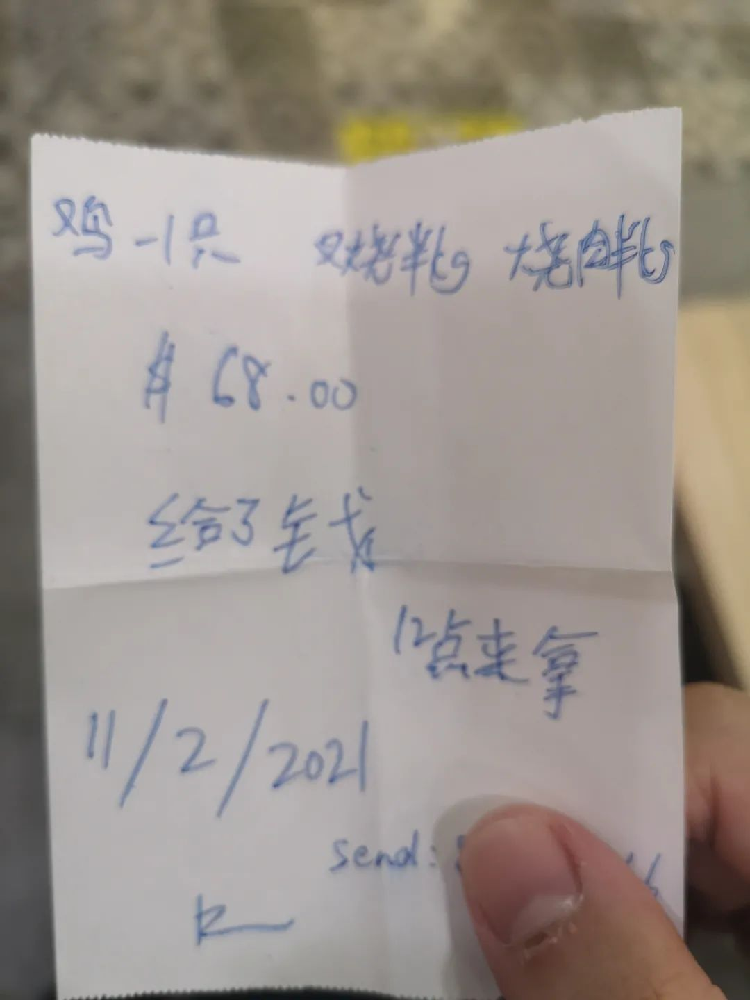
时间已经是除夕了。中午，在食堂看到很多逡巡不定的中国人，运动T恤上衣和明显还没有软化的牛仔裤，鞋子上有刷去污渍后剩下了少许顽固分子的痕迹。那时候突然觉得久违的侧写感上来了，是很明显地噢这个我明白。
著名伤痕文学代表作家卢新华在《伤痕》的开头写道：
除夕的夜里，车窗外什么也看不见，只有远的近的，红的白的，五彩缤纷的灯火在窗外时隐时现。这已经是一九七八年的春天了。
晓华将目光从窗前收回，低头看了看表，时针正指着零点一分。她理了理额前的散发，将长长的黑辫顺到耳后，然后揉了揉有些发红的微布着血丝的双眼，转身从挂在窗口的旧挎包里，掏出了一个小方镜。她掉过头来，让面庞罩在车厢里淡白的灯光下，映在方方的小镜里。
这是一张方正、白嫩、丰腴的面庞：端正的鼻梁，小巧的嘴唇，各自嵌在自己适中的部位上，下巴颏微微向前突起；淡黑的眉毛下，是一对深潭般的幽静的眸子，那间或的一滚，便泛起道道微波的闪光。
烧腊窗口的老板娘走出来说：“帅哥，烧鸡和一公斤烧腊都要切好吗？”
我说切好吧，然后补充道：“如果配不齐的话，用其他的搭在一起也没关系。”
老板娘保证说放心一定能配齐。
端了杯酸柑水在台边等。朋友发消息问下午什么时候一起去采购酒水和零食。回的消息还没有发出去，Pearl人就已经风风火火进餐厅来打完招呼，然后问我这边提着烧腊带走还要等多久。
因为短租在坡算是 有违法规的行为，所以我们一行订到了一家酒店的高级行政套房。
打开电视机，调到中文国际。主播一边说着“我们向海外华人侨胞拜年”之类的话，我们一边对电视机里说谢谢你也祝你新年快乐。
拿起相机开始记录主厨和帮厨们准备年夜饭，突然听到坐在电视前的朋友对我大喊“快来快来，你上央视了！！！”原来是一个穿衣风格很花，而且戴口罩之后侧脸和我几乎完全一样的人，在ChinaTown接受了央视的街采而且署名的单位也是我现在在的学校。盯着这个人看了一会，又看到他回到现在住的同一栋寝室楼里包饺子。好朋友于是把电视机里的内容拍下来发给家里，因为Caption这些都和自己完全符合就决定以假乱真，结果刚发回去就被同样坐在电视机前的家人识破。
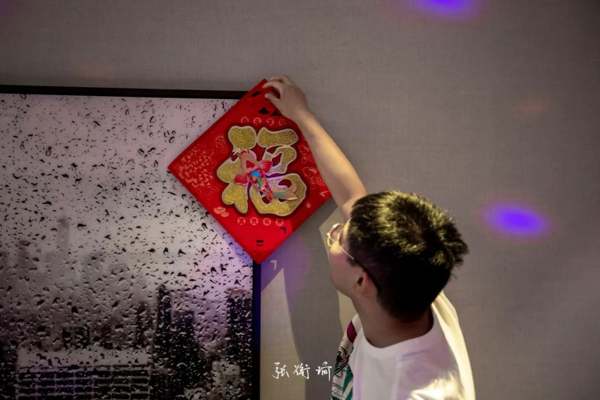
长沙年夜饭，历来少不了虎皮肘子、五圆蒸鸡、腊味合蒸和一条有头有尾的鱼。之前在家的时候还说肘子以前在比较困难的家庭里也可能用扣肉。约莫是因为肘子总有一整面，只要一动筷子就会破相。但是扣肉就无所谓，这一餐没有吃完，下一餐待客的时候还可以再添两片进去。所以湘菜也称完整的扣肉为“面子菜”，约莫就是很有面子。
过年的讲究大概还有很多，不过我们这边坐下来的都是二十多年第一次在非籍贯地过年的年轻人。掌勺主厨是成都人Gndisbg和上海人寿司，我们剩下的来自吉安、南京、楚雄、西安以及我。大家的年节习惯约莫差别都挺大的，但好在都已经过了在大学里和不同地方同学磨合的时候，也正在没有必须苛刻地在某个时间点要做什么的年纪。
主厨们已经早早地把食材买好。甚至已经提前在家把那些有可能会触发酒店里烟雾报警器的食物准备好，只等带过来加热回炉。
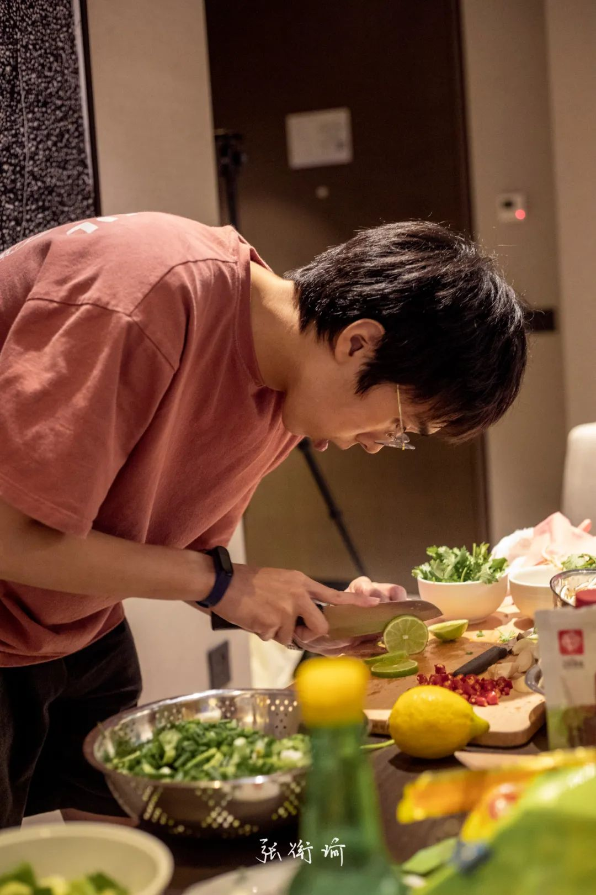
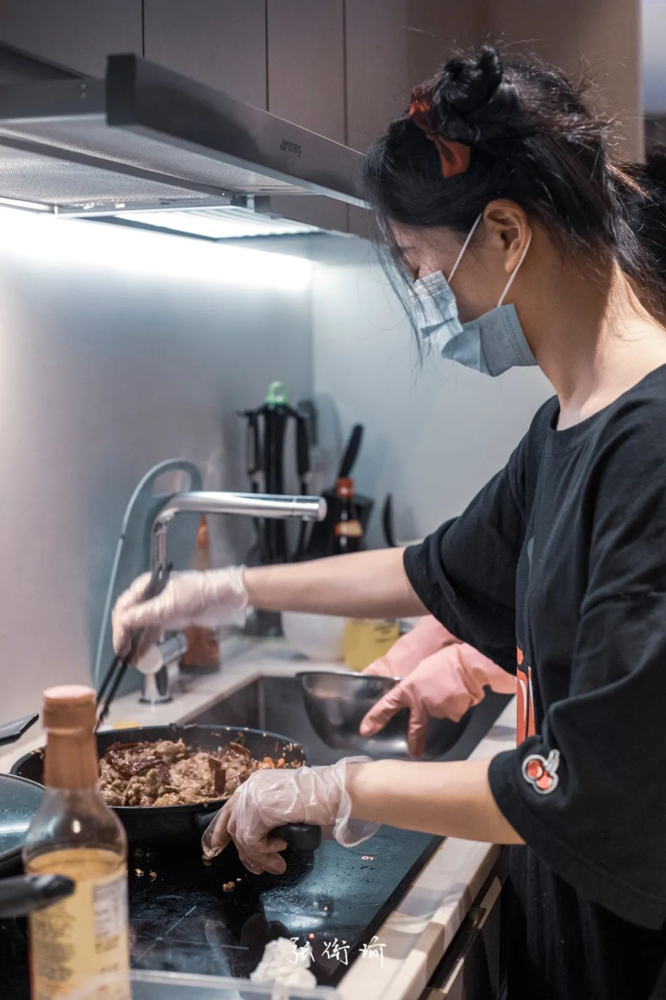
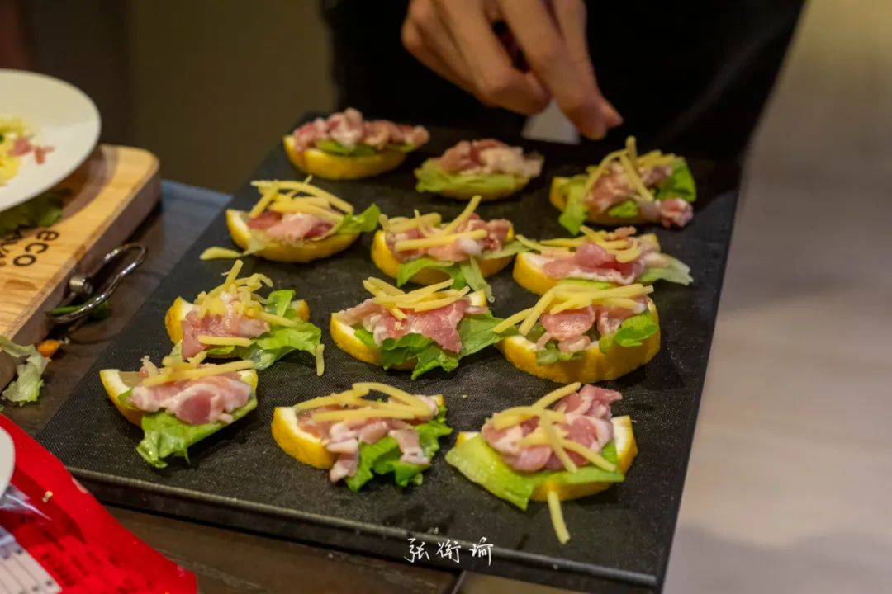
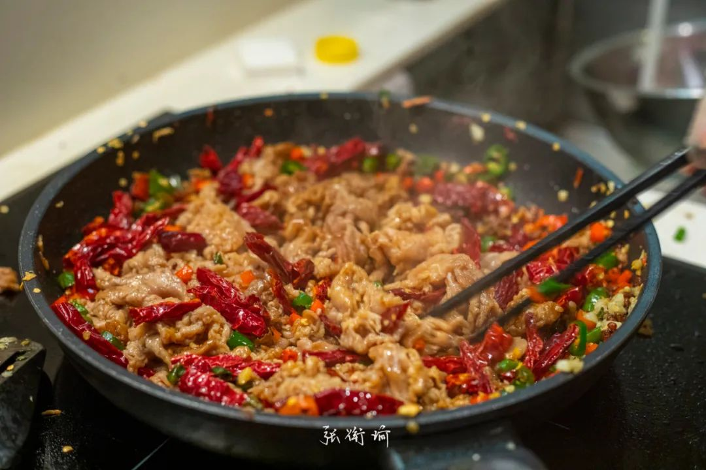
团年饭后，照例放着春晚玩手机。
不过，今年还有额外活动UNO和德国心脏病。两只老虎爱跳舞，以及Thank you, Cheems. 希望月亮没有竹鼠、摇摆、虫和Rick鬼。
给以前的导师发完拜年消息。
群发消息总是显得不诚恳的，不过给我发了带名字的祝福消息，我也都会认真回一条对人发的祝福消息。印象最深的是学长Alec来拜年，我给学长说在美国也要好好的，吃好年夜饭保护好自己。结果学长说他回国了，刚隔离完已经毕业了。想了想，那我祝福他的内容，他已经都实现了。
牛气冲天、牛运亨通，好像十二年前我读小学的时候，刚刚开始流行的喜羊羊也是这么说的祝福语。原来汉语的祝福词汇，在十二年一轮的维度上变迁得没有我想的那么快，或者说这些语法逻辑基础很基础，几乎不会怎么变。但是人们不是都说现在语言变化得很快吗，我自己也觉得有些脑残的表达一直很瞎眼睛。可能我们误把看到的最活跃那部分，以为那就是基本盘。
除夕到春节，从我记事起就只有两次是在家里过的。一次是很小的时候，爸爸在楼梯间里炸响了一挂鞭子，然后飞快地跑回来，还没来得及关上外边的铁门我就听得鞭子在楼道里炸响。另一次是去年，因为我在武汉读大学。当然去年大家的记忆都差不多。
听完李谷一老师唱歌之后，一遍哼着“青山在人未老”，一边收拾着东西。往年应该也是这个时候一两点钟，就要开始坐在车上，听着窗外的鞭子声回家。现在还能记得总在长沙正月初一街道上看到处弥漫的烟雾，人们把这叫做节庆的氛围，我觉得恰如其分。前年应该就拿了驾照了，那前年应该是我开车回家。
我印象中没有正月初一烧头香或者给祖宗写封的习俗，可能每个地方或者说每个家庭也都在过自己的年。这么一想公约数春晚要煲上一碗偌大的汤，有执念的人约莫真的很执着吧。南京的CX说他奶奶零点之前就已经去鸡鸣寺了，为的是抢到辛丑年的头香。西安的略略略~称一定要在零点过的时候吃上饺子才是把这一年转过去了。其他人还在比较着各地的不同，吉安的老板凉在零点的钟声倒计时后，从包里拿出来了一个大大的红包，里边封着给我们每个人的一份新年礼物，很惊喜的大吉大利、好吃好喝
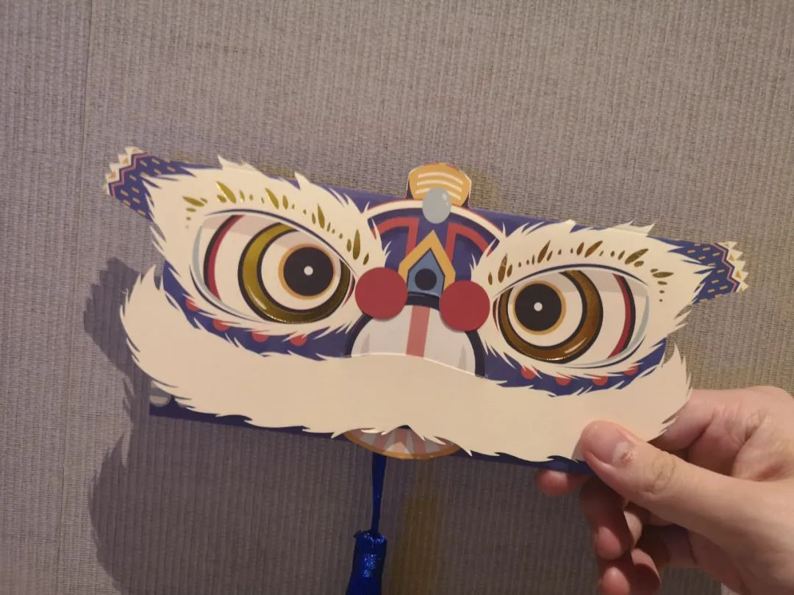
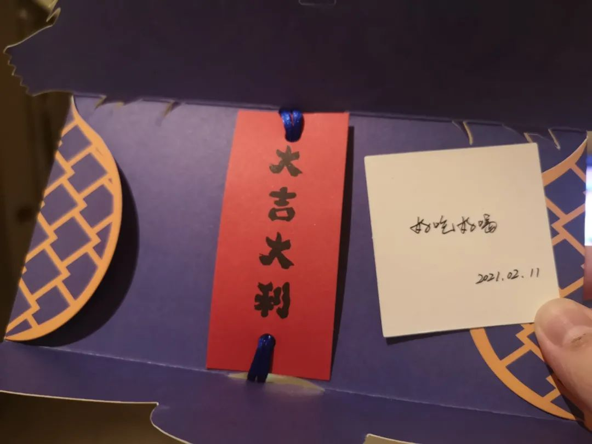
下楼后坐上了一位中东或者非洲裔驾驶员开的车，看到我们的面相之后说了声：“Happy New Year to you all.”回谢后，我们开始数着那些在籍贯地的年节习俗。哪天要做什么，或者什么时候要做什么。正月初一的早晨，只不过在坡。
做了很长但是质量很高的梦，好像是在下雨天开车到什么地方去，有一些只有我才能找到的楼梯和羊肠小道。朋友跑到我寝室来敲门“你没有看消息吗？这都几点了快下来一起吃饭，他们还等你一起去烧香呢”
出门去到天福宫和玉皇宫，不过两家都因为预约满、或者忘记说的什么理由而没能进去。领班道长塞了一些太岁相关的宣传册到我们手里。
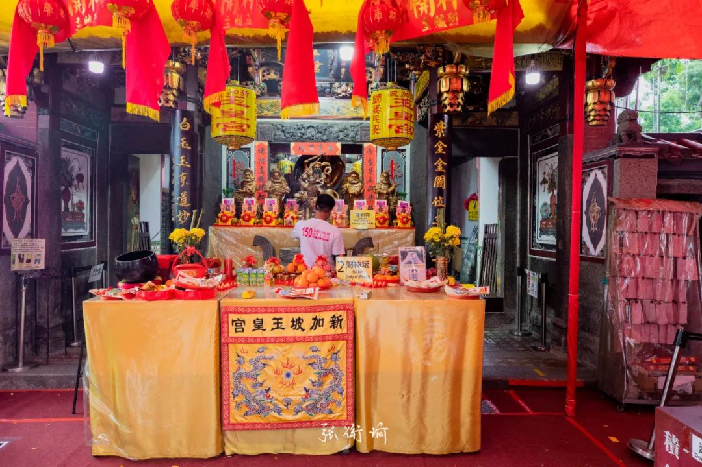
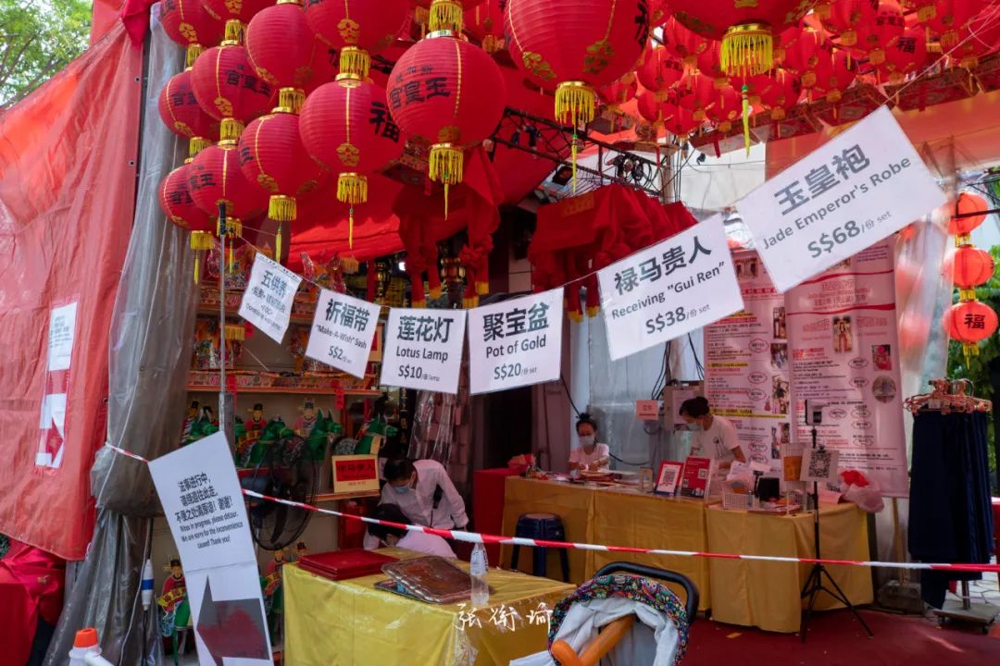
我们想，那去不成就去不成呗，于是在街上晃荡。晃到街角随缘发现另一个可以进香的地方，外边写着大伯公。
和烧着法物的教众行礼后，旋即入庙内。一重檐上写着仙祖宫，再往内有匾额仙机妙应，主供奉为呂府仙祖想来应为吕洞宾。看到碑文上有些紫云建庙碑记，那也就是说仙祖宫原名应为紫云庙。
后来搜了一下其他供奉诸神，果然是很南洋华人的标准儒释道结合后寺庙：吕洞宾主堂，而后分侧供奉至圣先师和关帝、观音和释迦牟尼、元始天尊和莲花三太子。
按照教徒规矩，没有在殿内拍照。还好身上有一些现金，于是借给朋友作香火钱，或者我自己做添油的广种福田投到了添油箱内。
看到既然到附近了，于是晚上又去了一趟牛车水的佛牙寺。数了数过去的七天里，去了三次牛车水，从各种角度把牛车水的一块区域翻了个遍。
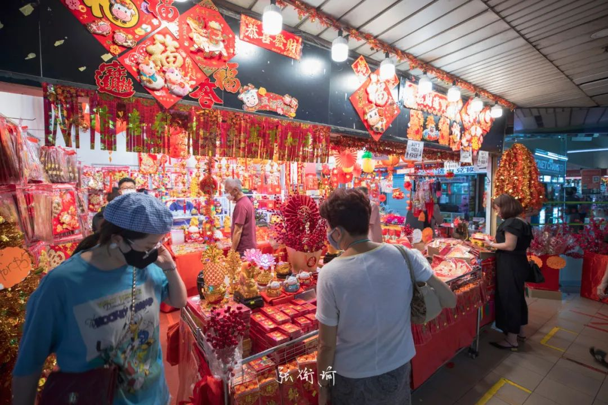
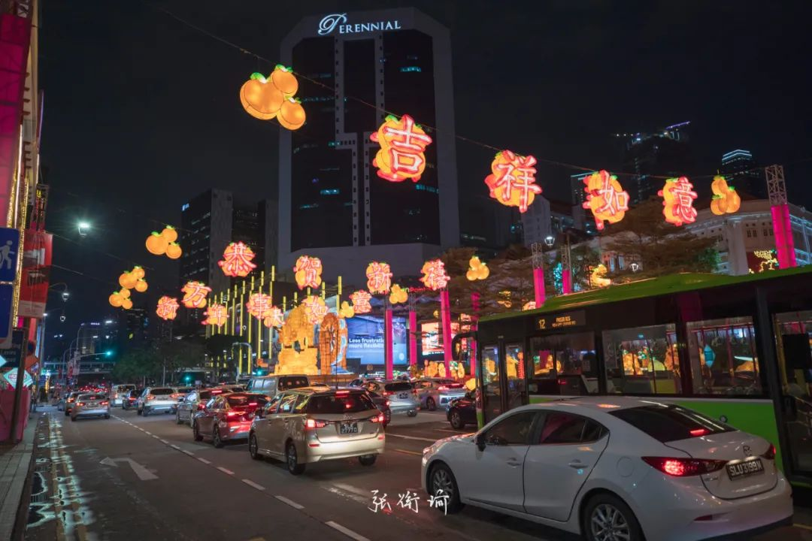
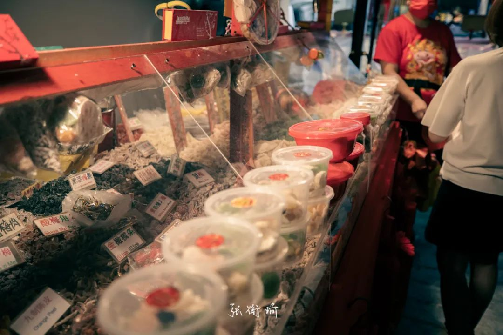
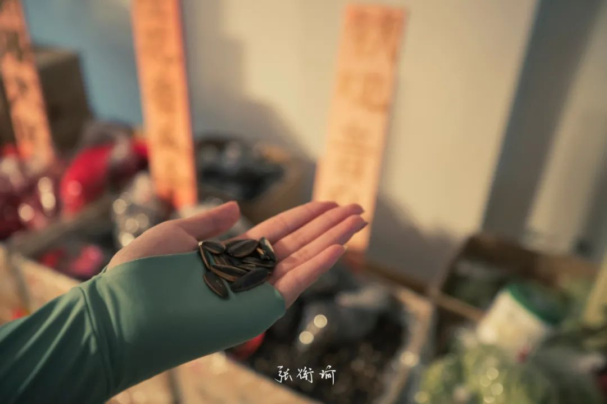
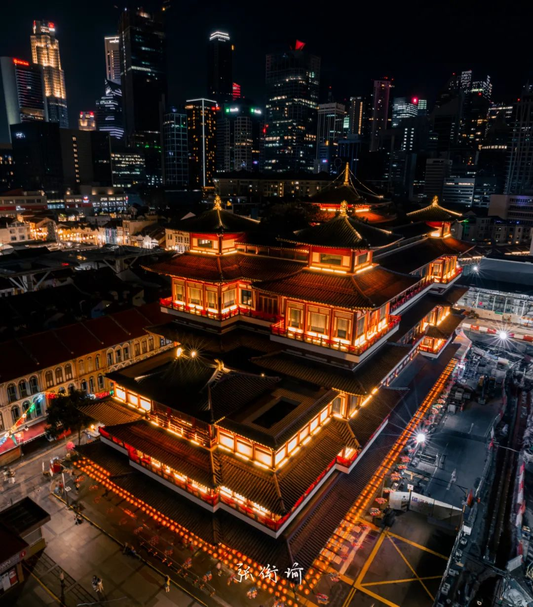
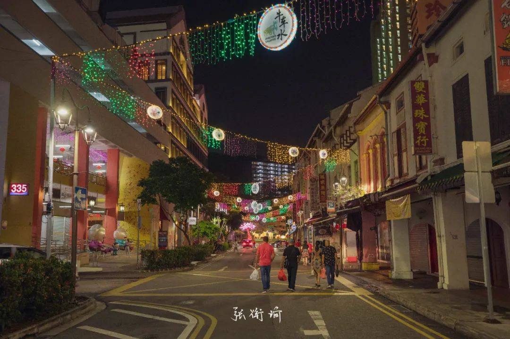
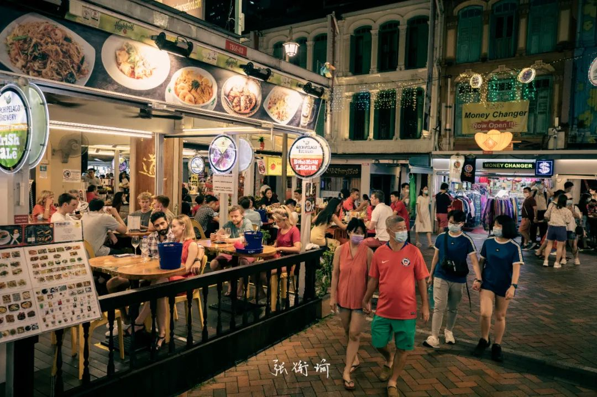
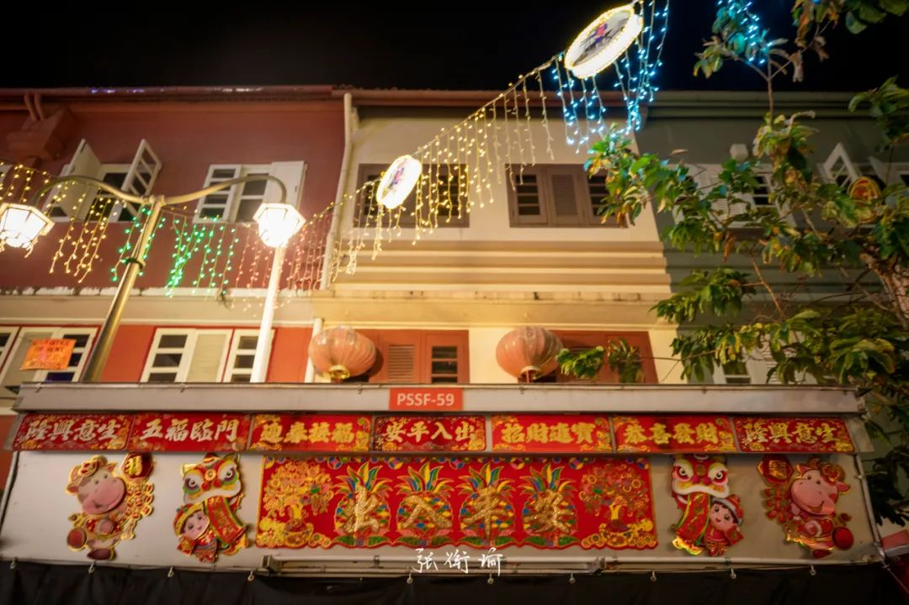
组屋类似于新加坡的安置房，是这边给每一位公民居者有其屋的保障用房。我那张佛牙寺的高点，机位就在牛车水附近组屋HDB的天台上。进电梯前，一位穿着红色衣服的华人老太太拄着拐杖佝偻着腰，和另一位印度裔打招呼说Happy New Year发音是那种很南洋的发音，有些颤颤巍巍的。
我按下电梯，等她先上电梯，随后和寿司一起进去，按下了14。老太太一边用有些颤抖的话和我们说着Happy new year一边又开始用普通话 今天呐first day, 明天呐second day并且竖起来自己的手指。回过祝贺新年的话之后，老太太向我们做出握手的手势，我于是也伸手出来握上。没想到老太太像祈福一样，低头把手放到了她的额前，和我们用中文说了一声“平安”并且对寿司也行了同样的祈福礼，以致于行礼完才来得及去按电梯，她按15的时候我们已经快到14要出电梯厢。
后来我们觉得，她可能是很早之前下南洋的第一代或者第二代移民，还保留有很古早的年节传统。而且声音和步伐明显能看出来已经有些失调就像上学期在疾病生物学里接触到的Movement Disorder于是渐进地影响到了中英双语的语言中枢，所以说话的时候才会时而中文时而英文地和我们唠。但无论如何，祝福是恳切的。我会在国内年节的时候，拜年或者对每一位这段时间会说上两句话的人都说说新年快乐恭喜发财，握手礼也有，但不会如此郑重地将其他人的手放到额前说一声“平安”可能这就是奶奶辈的年俗吧。
回程。虽然是表面冷静的汉服男子提着相机，其实耳机里在听珠帘寨。汉服不那么严格，因为算起来应当为汉元素的衣服，不能直接称为汉服。
早在腊月二十八出门探店的时候，吃姜高手问我觉得疫情还会持续像这样大面积地影响多久。我想了想，约莫两三年？应当算比较能按照普通的发展速度把疫情熬过去。想恢复原来的那种正常生活，比如在东南亚读书还可以搭凌晨的航班回家过个周末，或者去周边的巴厘岛、曼谷这些地方玩一玩。估计还得两三年吧。不友好的是对抱有以前来东南亚留学人群的那种憧憬，大概许许多多可以边读书边走走停停的地方，现在都变得难上加难。在能预见到快要毕业的人看来，特为尤甚。
晚上又在做梦
这一次是同一个场景换很多次的梦。在一个门外，和朋友们几次开门进去观看纪念墙。纪念墙上有很多的内容，每一次开纪念室的门内门外，就有纪念墙里外时间不断流逝。从很少年的时候，到青年、中年和很老的年纪。
看到有人在吐槽，说自己过年如果要写下来的话是记录没好生活。不过海外华人的年节就很简单，和朋友吃吃饭，网络拜完年就开始休息。是真的需要休息的那种休息。我一点也不想每天醒来就打开编译器，一眼看到自己睡着时候的样子。好像醒来之后的盼头就是十几个小时之后能躺下来好好地睡一觉。
正月初一点亮了一个技能点——生成地图戳的Lightromm Classic 2021
早就有人安利过这款软件强大的相册管理系统，之前一直囿于PS的Camera Raw用起来似乎从功效上看也和LR没有什么区别。而且其实之前有安装好，只是没有大批量导入图片进来进行管理。开始用了之后就觉得，呼，真香。
可惜华为手机是在18年5月之后才支持地址戳，而相机是在20年7月才打开的跟踪记录，所以有很多的照片的地理信息缺失了。比较完整的，比如在我稍微摄影入门后的武汉扫街记录，还是能好好生成。
以后再也不用费劲地描述我在武汉的探索边界到了哪里。这里边也就阳逻、盘龙城、纸坊和木兰草原没有收录得进来。其他部分还挺完整的。
生成这张图的时候已经是正月初二了，朋友圈里提到武汉循礼门花市已经完全脱销。本地媒体去走访完，发稿先借农历牛年说要牛气冲天（哪个农历新年没有对应的词）后又说是去年新年没有添置花卉的一轮报复消费导致今年鲜花消费火爆异常。可以理解这种苦衷。许许多多我待过三年半这片土地上的人，自庚子年伊始，就已经听不到辛丑年钟声看不到辛丑年曙光。换我在现场，也会去把花店搬空。

正月初二是奶奶生日，和家里打完视频之后去楼下吃午餐。为数不多开了的几个窗口人多得令人咋舌。点了小笼包窗口的一份小笼包和一份红油抄手面。好像也可以附会一点什么内容，来解释一下为什么我点了这些东西。但其实就是点了。
一边吃着，一边和另一位也在正月初二生日的&聊天。聊天的时候大部分时候在说长沙话，少部分时候切回了塑普和英语。
当时餐厅人很多，坐在旁边独自吃饭的女生突然问起“同学你是湖南人吗？”然后是见到老乡的对线，噢我知道你们那边有哪些景点和地名。人文地理的内容似乎总是能知道得像本地人一样。
别人说小众事情，结果发现我知道的时候，总觉得很不可思议。这次说的是大家都久仰的柳肃和阮仪三，还有那些风景园林她的专业内，但我看闲书也有看到的规划和设计。
正月初三 情人节
古老的冷笑话早晚会遭报应，中午看的时候朋友圈终于有比较多的动静说说过去的又经历了多少的日子。绝绝子。
整理完过年的笔记和图。新的一年学习开始了。好像是只把一个周日换到了上周四和上周五去过。没有文学作品里记载的那种“腊八过了就是年”那么闹腾，也没有“大人子望插田细伢仔望过年”那么翘首以盼，从除夕到初二，年就基本上过去了。
年前在京东买了些年货，二十天前想着从广州发到我这边。不过现在还没有到。里边的大抵是徐福记、三只松鼠、麦丽素、溜溜梅、良品铺子之类。既然年前没有到，年后再拿到的时候也不知道是到哪一天。就好像这些物品已经走离开了他们本应到的时间点，不知道收到的时候会是什么心情。串门似乎没有那么频繁，而且非日常的食物 等到了再说吧。
倒是年前腊月二十八的时候，在裕华国货买了一些猫耳朵、沙琪玛、米糕和一些散装小零食。还有两瓶营养快线Nutri Express有笑到我，翻译过来是营养快递。原来从小喝到大的快线是快递的意思，娃哈哈诚不我欺。